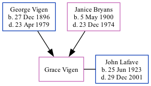

Grace Marion Lafave (née Vigen) 1925 -
[ Home ] | [ Surnames Index ] | [ Family History ]The child of George Vigen and Janice Bryans, , Grace is the first cousin twice-removed on the father's side of Stephanie Hardesty (née Teten), was born in Woodbury, Iowa1,2,3. She was married to John C Lafave.
During her life, she was living in Sioux City, Woodbury, Iowa in 19301 and in 19354; and in Sioux City, Woodbury, Iowa, USA on Apr 1, 19402.
Parents
- George Leonard Dilley was born on Dec 27, 1896
- Janice Bernadine was born on May 5, 1900
Citations
- 1930 United States Federal Census Ancestry.com Operations Inc (Age: 4; Age: 4 4/12; Marital Status: Single; Relation to Head of House: Daughter)
- 1940 United States Federal Census Ancestry.com Operations, Inc. (Age: 14; Marital Status: Single; Relation to Head of House: Daughter)
- Iowa, Births and Christenings Index, 1857-1947 Ancestry.com Operations, Inc.
- U.S. Public Records Index, Volume 2 Ancestry.com Operations, Inc.
Family Tree
Data (GEDCOM) maintained by Jay Weston Hannah, Omaha, Nebraska, USA.
Website generated by ged2site. Last updated on Jun 18, 2024.